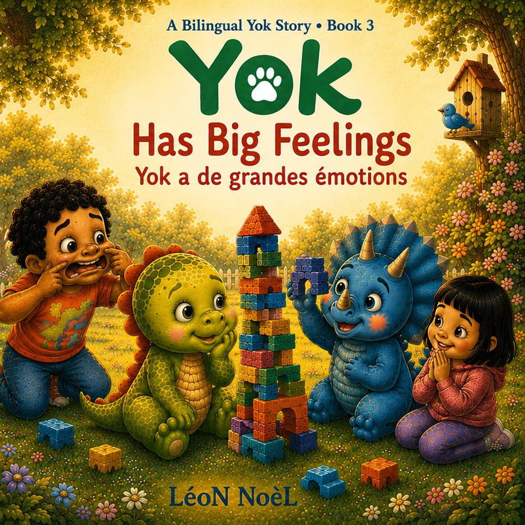
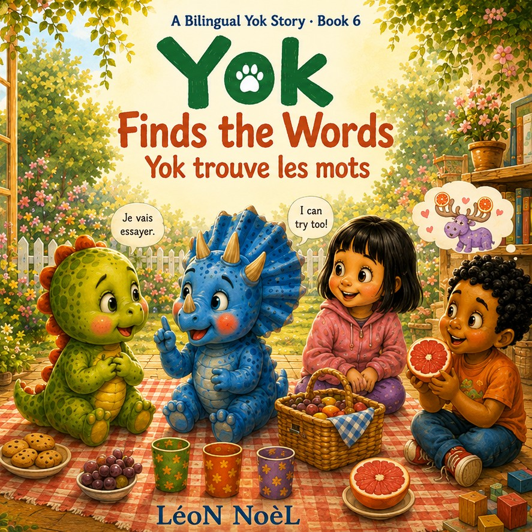
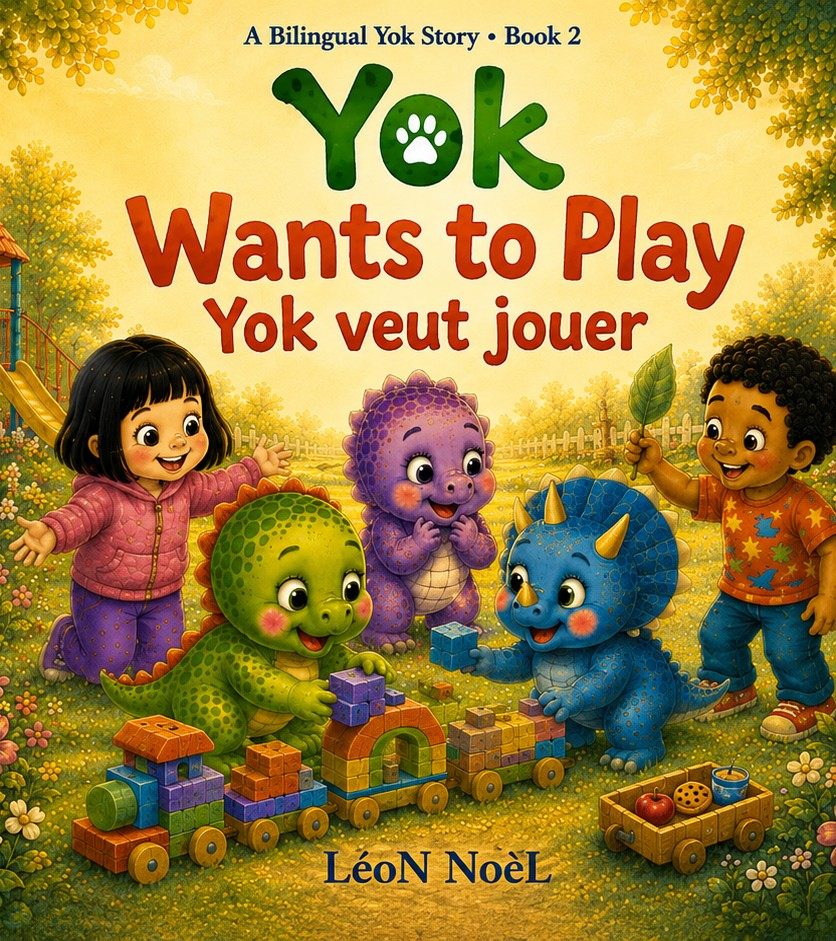
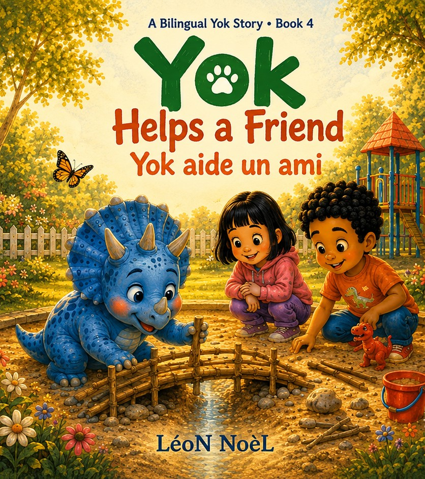
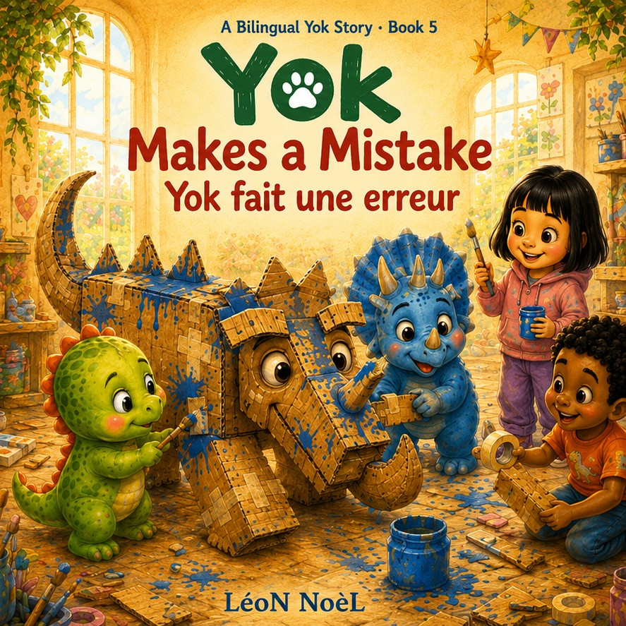

Book 1 · English + French
Yok Says Hello
Yok dit bonjour
A new friend can make one little word feel very big.
Focus: Courage, connection & first words.
Planned publication: August 24, 2026
A Bilingual Yok Story · Ages 3–6
Six gentle picture books where friendship, feelings, and everyday courage create natural reasons to hear and try both languages.
English and French are presented throughout the books, with the same story moments revisited in both languages so children can follow meaning through pictures, repetition, and context.



A Bilingual Yok Story
These are new Yok stories created as a bilingual collection—not translations of Yok Books 1–10.
Book 1 · English + French
A new friend can make one little word feel very big.
Focus: Courage, connection & first words.
Planned publication: August 24, 2026

Book 2 · English + French
Sometimes joining in starts with just one small invitation.
Focus: Friendship, inclusion & joining in.
Planned publication: August 31, 2026
Book 3 · English + French
Sometimes a big feeling needs one small word to make sense.
Focus: Big feelings & emotional vocabulary.
Planned publication: September 7, 2026

Book 4 · English + French
Sometimes helping begins with asking one small question.
Focus: Helping, listening & cooperation.
Planned publication: September 14, 2026

Book 5 · English + French
Every mistake can become the beginning of making things right.
Focus: Mistakes, honesty & repair.
Planned publication: September 21, 2026
Book 6 · English + French
Sometimes the bravest words are the ones that are not perfect yet.
Focus: Language learning, confidence & friendship.
Planned publication: September 28, 2026
How to read them
The illustrations carry the story while repeated moments in English and French help children connect meaning without turning reading time into a lesson.